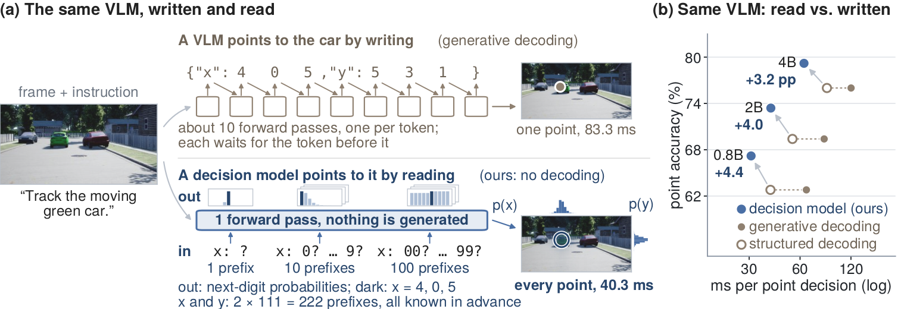
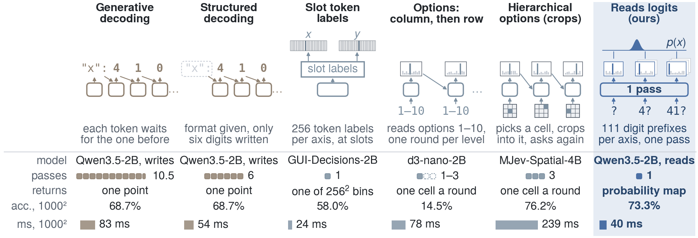
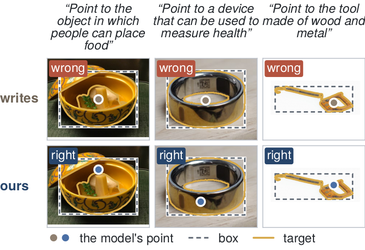
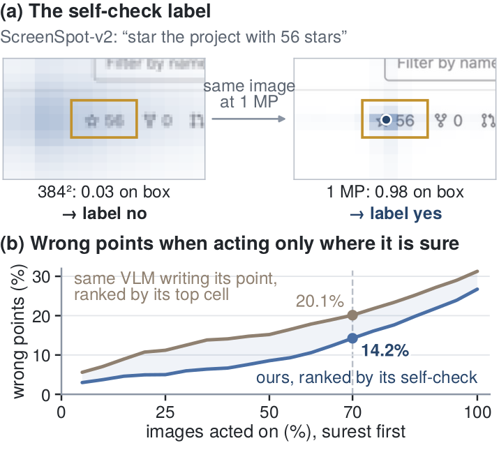
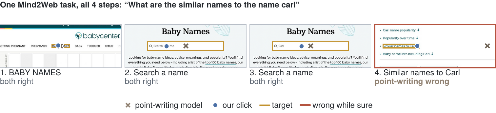
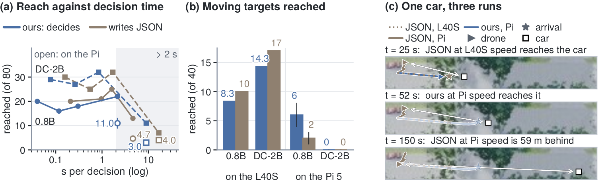

Project page · 2026
A VLM that writes coordinates as digits already holds a pointing decision model. ReadPoint reads it in one forward pass.
Before each digit of a coordinate, the VLM holds a probability for each of the ten next digits. The 1 + 10 + 100 = 111 prefixes of an axis are fixed, so all 222 for x and y enter one forward pass, and multiplying along the tree gives every value of x and y its probability.
Grounding data mostly give a box, not a point. Instead of teaching the box centre, we maximise the probability the read puts inside the box, so the model is free to point at the object itself.
The same pass asks whether the model can point precisely at this resolution. Its probability of yes ranks the decisions: act on the sure ones, look closer at the others.
Off the shelf, the most probable point of the read is as accurate as the written one and comes 2.4–2.8× faster, since nothing is generated. Released decision models instead choose among coarse options or take several rounds.


Fine-tuned on box centres, a VLM learns to point at the centre, even when the centre is off the object. Trained on the box as a label set, twelve VLMs point 1.9–4.4 pp more accurately, on the same data and steps.

Ranked by its self-check, Qwen3.5-2B is wrong on 14.2% of its 70% surest images, against 20.1% for the point-writing model ranked by its own top cell. On web tasks this removes clicks that are sure and wrong.


In a closed loop the target keeps moving while the model decides. At a Pi 5's decision speed, our 0.8B model reaches 11.0 of 80 DroneCATS targets, against at most 4.7 for the other models.

@misc{kim2026readpoint,
title = {Small Vision-Language Models Are Fast Self-Checking Pointing Decision Models},
author = {Kim, Geewook},
year = {2026},
url = {https://naver-ai.github.io/ReadPoint/}
}